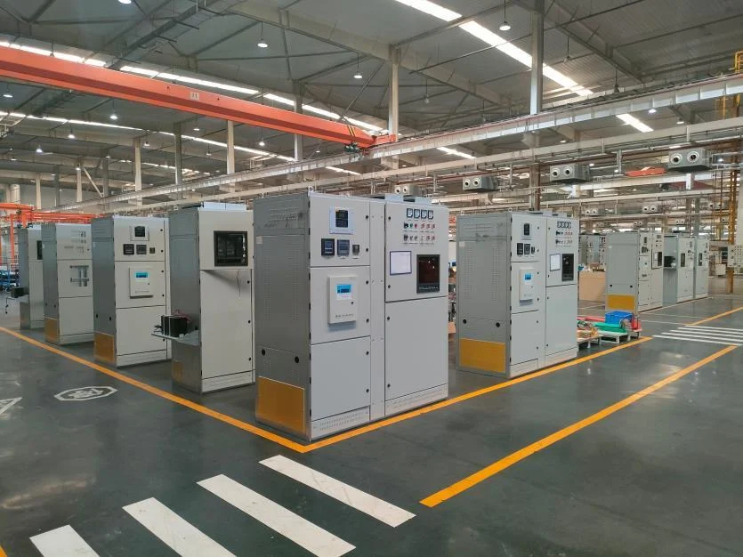

Project reference
Mining energy project in the DRC
The supply scope includes 18 substations for K Mine and 42 for T Mine, together with station-service transformers and spare parts.
- 18
- Substations · K Mine
- 42
- Substations · T Mine
- 9 MVA
- Per substation